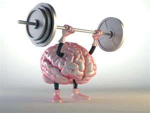

The Benefits of Consumption of Coffe
1.Boosts energy levels
Coffee contains caffeine, a central nervous system stimulant that is known for its ability to fight fatigue and increase energy levels. This is because caffeine blocks the receptors of a neurotransmitter called adenosine, and this increases levels of other neurotransmitters in your brain that regulate your energy levels, including dopamine. One small study found that consuming caffeine increased time to exhaustion during a cycling exercise by 12% and significantly reduced subjective levels of fatigue in participants. Another study had similar findings, reporting that consuming caffeine before and during a round of golf improved performance, increased subjective energy levels, and reduced feelings of fatigue.
2.May be linked to a lower risk of type 2 diabetes
Some research suggests that consuming coffee regularly could be associated with a decreased risk of developing type 2 diabetes over the long term. In fact, one review of 30 studies found that each cup of coffee people consumed per day was linked to a 6% lower risk of developing type 2 diabetes. This is thought to be due to coffee’s ability to preserve the function of the beta cells in your pancreas, which are responsible for producing insulin to regulate blood sugar levels. Plus, it’s rich in antioxidants and may affect insulin sensitivity, inflammation, and metabolism — all of which are involved in the development of type 2 diabetes.
3.Could support brain health

Although studies have turned up mixed results, some research suggests that coffee may help protect against certain neurodegenerative disorders, including Alzheimer’s disease and Parkinson’s disease. According to one review of 13 studies, people who regularly consumed caffeine had a significantly lower risk of developing Parkinson’s disease. What’s more, caffeine consumption also slowed the progression of Parkinson’s disease over time. Another review of 11 observational studies in more than 29,000 people also found that the more coffee people consumed, the lower their risk of Alzheimer’s disease. Additionally, several studies have demonstrated that moderate coffee consumption could be associated with a lower risk of dementia and cognitive decline.
4.May promote weight management

According to some research, coffee could alter fat storage and support gut health, both of which may be beneficial for weight management. For example, one review of 12 studies concluded that higher coffee consumption could be associated with decreased body fat, especially in men. In another study, increased coffee intake was linked to decreased body fat in women. Furthermore, one study found that people who drank one to two cups of coffee per day were 17% more likely to meet recommended physical activity levels, compared with those who drank less than one cup per day. Higher levels of physical activity could help promote weight management.
5.Linked to a lower risk of depression
Some studies have found that drinking coffee could be associated with a lower risk of depression. According to one review of seven studies, each cup of coffee people consumed per day was linked to an 8% lower risk of depression. Another study found that drinking at least four cups of coffee each day was associated with a significantly lower risk of depression, compared with drinking just one cup per day. What’s more, one study in more than 200,000 people showed that drinking coffee was linked to a lower risk of death by suicide.
6.Could protect against liver conditions

Interestingly, several studies suggest that coffee could support liver health and protect against disease. For instance, one study found that drinking more than two cups of coffee per day was linked to lower rates of liver scarring and liver cancer in people with liver disease. Other research shows that the more coffee people drank, the lower their risk of death from chronic liver disease. Drinking one cup of coffee per day was tied to a 15% lower risk, while drinking four cups per day was linked to a 71% lower risk. Another recent study found that coffee consumption was associated with decreased liver stiffness, which is a measure healthcare professionals use to assess fibrosis, the formation of scar tissue in the liver.
7.Supports heart health

Some research shows that drinking coffee may benefit heart health. In fact, one review found that drinking three to five cups of coffee per day was tied to a 15% reduced risk of heart disease. Another review of 21 studies showed that drinking three to four cups of coffee daily was associated with a 21% lower risk of stroke. What’s more, one study in more than 21,000 people also found that increased coffee intake was associated with a significantly decreased risk of heart failure. However, keep in mind that caffeine could affect blood pressure levels. Therefore, people with unmanaged blood pressure may need to limit or moderate their caffeine intake.
8.Could increase longevity

Some research suggests that coffee could help extend longevity, thanks to its multitude of potential health benefits. For example, one review of 40 studies concluded that drinking two to four cups of coffee daily was associated with a lower risk of death, regardless of factors like age, weight status, and alcohol consumption. Similarly, another study in 1,567 people found that drinking caffeinated coffee was linked to a lower risk of death after 12 and 18 years of follow-up. Furthermore, drinking at least one cup of coffee per day was also associated with a lower risk of death from cancer. Interestingly, one test-tube study showed that coffee was able to significantly extend the life span of yeast by protecting against free radicals and DNA damage. However, more research is needed to determine whether this could also apply to humans.
9.May enhance athletic performance
Coffee is often used as an ergogenic aid by athletes looking to improve performance and increase energy levels . An ergogenic aid is also called a performance enhancer. One review of nine studies reported that drinking coffee before exercise improved people’s endurance and decreased their perceived exertion, compared with a control group. Another study in 126 older adults found that drinking coffee was associated with improved physical performance and faster gait speed, even after the researchers adjusted for factors like age, belly fat, and physical activity levels. Additionally, a large review reported that moderate caffeine consumption could slightly improve power output and time-trial completion time. However, results varied, so the researchers also noted that caffeine may affect people differently.